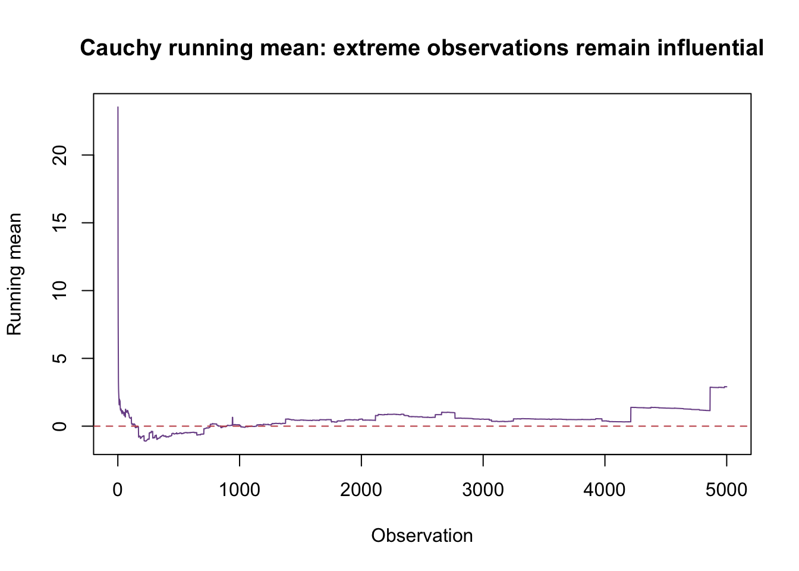

What does increasing n do when the population is Cauchy and has no finite population mean or variance?
2 Population / Process and Theory
X_i ~ Cauchy(location = 0, scale = 1). The population mean and variance do not exist. This project therefore does not report a population mean, population SD, or sigma / sqrt(n) for this case.
3 CLT Assumptions and Prediction
Independence and identical distribution hold, but finite variance fails. I expect extreme observations to remain influential and ordinary mean-based normal convergence to behave differently from the finite-variance cases.
4 Simulation Design and Evidence
Use the ordinary grid plus larger values when computationally useful. Examine histograms and Q-Q plots cautiously, and use the running-mean visualization as a sensitivity diagnostic.
Code
plot_cauchy_running_mean(5000L)

Code
if (is.null(rows) ||nrow(rows) ==0L) {cat("Run scripts/run_project.R after entering student_seed. No theoretical normal overlay or SE formula is available for Cauchy.\n")} else {print(rows)}
population_id n B empirical_mean theoretical_mean mean_error
195 cauchy 1 10000 0.8214074 NA NA
196 cauchy 2 10000 41.8030900 NA NA
197 cauchy 3 10000 -1.3096276 NA NA
198 cauchy 5 10000 0.2693934 NA NA
199 cauchy 10 10000 -0.1097491 NA NA
200 cauchy 15 10000 0.7514031 NA NA
201 cauchy 20 10000 0.3566563 NA NA
202 cauchy 30 10000 -1.4507110 NA NA
203 cauchy 50 10000 0.7450461 NA NA
204 cauchy 75 10000 1.4020836 NA NA
205 cauchy 90 10000 -1.4200318 NA NA
206 cauchy 95 10000 0.0755759 NA NA
207 cauchy 98 10000 0.4130791 NA NA
208 cauchy 99 10000 -9.8275702 NA NA
209 cauchy 100 10000 -0.4161698 NA NA
210 cauchy 101 10000 51.7405046 NA NA
211 cauchy 102 10000 2.1956675 NA NA
212 cauchy 105 10000 -1.0782199 NA NA
213 cauchy 110 10000 -0.1802671 NA NA
214 cauchy 150 10000 2.4310816 NA NA
215 cauchy 200 10000 0.9478657 NA NA
216 cauchy 290 10000 -0.5811608 NA NA
217 cauchy 295 10000 1.6462314 NA NA
218 cauchy 298 10000 -0.6923950 NA NA
219 cauchy 299 10000 1.3224603 NA NA
220 cauchy 300 10000 -0.8760043 NA NA
221 cauchy 301 10000 -0.5934999 NA NA
222 cauchy 302 10000 -0.0427542 NA NA
223 cauchy 305 10000 -0.3908657 NA NA
224 cauchy 310 10000 9.4787549 NA NA
225 cauchy 490 10000 -0.8142817 NA NA
226 cauchy 495 10000 0.8594055 NA NA
227 cauchy 498 10000 -0.0890478 NA NA
228 cauchy 499 10000 1.2613728 NA NA
229 cauchy 500 10000 0.4683052 NA NA
230 cauchy 501 10000 -1.7449195 NA NA
231 cauchy 502 10000 67.9064108 NA NA
232 cauchy 505 10000 -1.4837979 NA NA
233 cauchy 510 10000 -0.0520263 NA NA
234 cauchy 740 10000 1.0096198 NA NA
235 cauchy 745 10000 1.3606192 NA NA
236 cauchy 748 10000 0.9517642 NA NA
237 cauchy 749 10000 -1.3909105 NA NA
238 cauchy 750 10000 -0.4283364 NA NA
239 cauchy 751 10000 0.1617086 NA NA
240 cauchy 752 10000 -3.8040157 NA NA
241 cauchy 755 10000 0.7975074 NA NA
242 cauchy 760 10000 -0.3205688 NA NA
243 cauchy 1000 10000 -6.3307470 NA NA
244 cauchy 2000 10000 0.5453292 NA NA
245 cauchy 5000 10000 1.0832385 NA NA
empirical_se theoretical_se relative_se_error skewness excess_kurtosis
195 103.51639 NA NA 71.354040 6591.8561
196 4168.72820 NA NA 99.954234 9993.9086
197 194.51034 NA NA -69.788199 6913.8762
198 69.15863 NA NA 7.645866 1538.5501
199 53.86615 NA NA 42.678822 3998.3617
200 116.70008 NA NA 29.326123 3608.0007
201 160.17331 NA NA 40.976887 4224.1331
202 138.06434 NA NA -45.066502 3464.2813
203 64.17990 NA NA 39.160590 2194.6611
204 128.63420 NA NA 69.718949 6265.1589
205 115.53873 NA NA -91.665839 8889.6670
206 42.55871 NA NA 4.369569 1528.5591
207 41.72113 NA NA 4.225899 1319.6436
208 752.57688 NA NA -95.041870 9280.0149
209 90.20369 NA NA -30.510780 3257.4573
210 5206.47784 NA NA 99.981346 9997.5170
211 226.41351 NA NA 76.512671 6768.9610
212 157.00572 NA NA -79.850249 7573.8960
213 54.86989 NA NA -2.699067 809.8033
214 249.04645 NA NA 69.071721 6584.3380
215 82.40052 NA NA 33.011585 2677.2809
216 92.59663 NA NA -32.916112 2577.4692
217 92.47727 NA NA 61.183520 4162.7845
218 56.32998 NA NA -23.222476 1233.8343
219 94.22082 NA NA 65.078270 5703.1356
220 90.45646 NA NA -33.943481 2063.4580
221 129.34856 NA NA -24.057671 4123.3302
222 39.23362 NA NA 18.040352 1436.6502
223 42.32695 NA NA -22.326040 1978.1407
224 727.09984 NA NA 88.070968 8156.7094
225 58.00678 NA NA -26.900290 1476.5205
226 91.96141 NA NA 19.984244 2838.6170
227 77.59617 NA NA -41.875095 3324.3848
228 130.05392 NA NA 62.905824 4487.5170
229 64.80621 NA NA 63.825896 5659.7005
230 212.65362 NA NA -65.027372 6788.9841
231 6808.81680 NA NA 99.983206 9997.7637
232 163.56736 NA NA -89.001111 8580.7895
233 76.96549 NA NA 19.029782 1758.8293
234 164.09166 NA NA 83.128598 8027.1119
235 96.61790 NA NA 51.776050 3769.1582
236 35.80326 NA NA 29.538155 1382.8238
237 157.97316 NA NA -64.553203 6003.9958
238 41.15960 NA NA -19.027949 1072.9710
239 52.46674 NA NA 1.344125 1301.0186
240 359.41464 NA NA -87.598581 8315.8502
241 270.82400 NA NA 11.469894 4576.4683
242 83.59105 NA NA -79.010952 7414.5260
243 527.59494 NA NA -89.755756 8509.3820
244 65.64658 NA NA 67.181552 6098.9619
245 136.09112 NA NA 46.791794 4440.7239
qq_rmse seed_label
195 1.301852 student_seed
196 1.383561 student_seed
197 1.340080 student_seed
198 1.248543 student_seed
199 1.240017 student_seed
200 1.297489 student_seed
201 1.316432 student_seed
202 1.300103 student_seed
203 1.240318 student_seed
204 1.307865 student_seed
205 1.324258 student_seed
206 1.192640 student_seed
207 1.201700 student_seed
208 1.369644 student_seed
209 1.271031 student_seed
210 1.384457 student_seed
211 1.342078 student_seed
212 1.324039 student_seed
213 1.203689 student_seed
214 1.338810 student_seed
215 1.253975 student_seed
216 1.279032 student_seed
217 1.295626 student_seed
218 1.215323 student_seed
219 1.291492 student_seed
220 1.259968 student_seed
221 1.306183 student_seed
222 1.193114 student_seed
223 1.212176 student_seed
224 1.365077 student_seed
225 1.235022 student_seed
226 1.278413 student_seed
227 1.265021 student_seed
228 1.316878 student_seed
229 1.267414 student_seed
230 1.341206 student_seed
231 1.384654 student_seed
232 1.333884 student_seed
233 1.246219 student_seed
234 1.328519 student_seed
235 1.286081 student_seed
236 1.182962 student_seed
237 1.315967 student_seed
238 1.177276 student_seed
239 1.213335 student_seed
240 1.349258 student_seed
241 1.340137 student_seed
242 1.293112 student_seed
243 1.358713 student_seed
244 1.264514 student_seed
245 1.301498 student_seed
5 Final Selected N and Interpretation
Code
report_selection(spec$id)
Selected N: No finite defensible value identified within the tested range.
Evidence decision: No finite defensible n was identified through n = 5,000; Cauchy has no population mean or variance and the running mean remains extreme-sensitive.
The N/A decision is limited to this ordinary sample-mean criterion and the tested range through n = 5,000; it is not a claim that every possible robust estimator fails. The project correctly leaves population mean, population SD, and sigma / sqrt(n) as N/A.
Source Code
---title: "05 · Cauchy"subtitle: "A heavy-tail case where the ordinary finite-variance CLT does not apply"---```{r}root <-if (file.exists("R/config.R")) "."else".."source(file.path(root, "R/config.R")); source(file.path(root, "R/distributions.R"))source(file.path(root, "R/diagnostics.R")); source(file.path(root, "R/simulate_means.R"))source(file.path(root, "R/plotting.R")); source(file.path(root, "R/report_helpers.R"))spec <-population_spec("cauchy"); rows <-population_rows(spec$id)```## Research QuestionWhat does increasing `n` do when the population is Cauchy and has no finite population mean or variance?## Population / Process and Theory`X_i ~ Cauchy(location = 0, scale = 1)`. The population mean and variance do not exist. This project therefore does not report a population mean, population SD, or `sigma / sqrt(n)` for this case.## CLT Assumptions and PredictionIndependence and identical distribution hold, but finite variance fails. I expect extreme observations to remain influential and ordinary mean-based normal convergence to behave differently from the finite-variance cases.## Simulation Design and EvidenceUse the ordinary grid plus larger values when computationally useful. Examine histograms and Q-Q plots cautiously, and use the running-mean visualization as a sensitivity diagnostic.```{r}plot_cauchy_running_mean(5000L)``````{r}if (is.null(rows) ||nrow(rows) ==0L) {cat("Run scripts/run_project.R after entering student_seed. No theoretical normal overlay or SE formula is available for Cauchy.\n")} else {print(rows)}```## Final Selected N and Interpretation```{r, results='asis'}report_selection(spec$id)```The `N/A` decision is limited to this ordinary sample-mean criterion and the tested range through `n = 5,000`; it is not a claim that every possible robust estimator fails. The project correctly leaves population mean, population SD, and `sigma / sqrt(n)` as `N/A`.